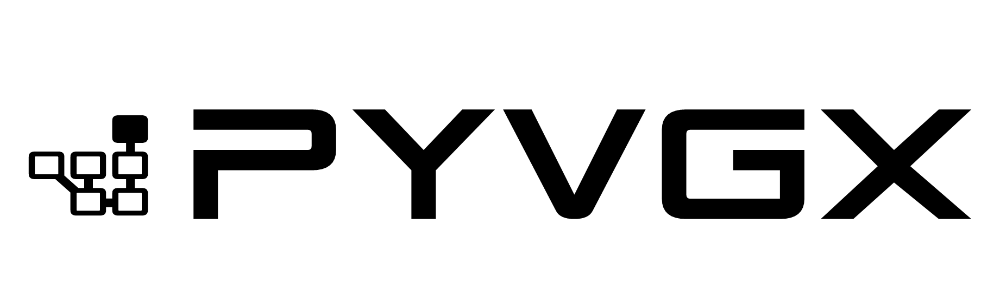
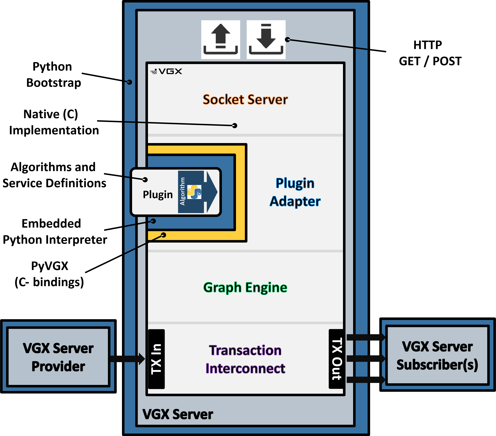
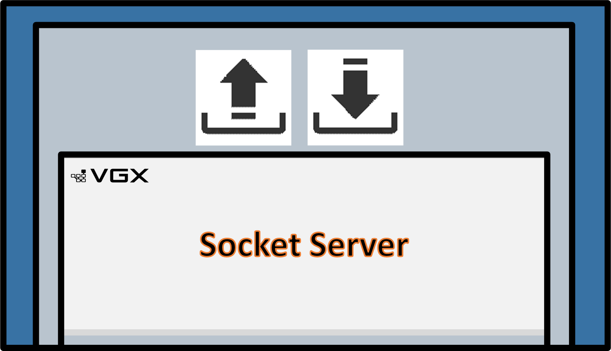
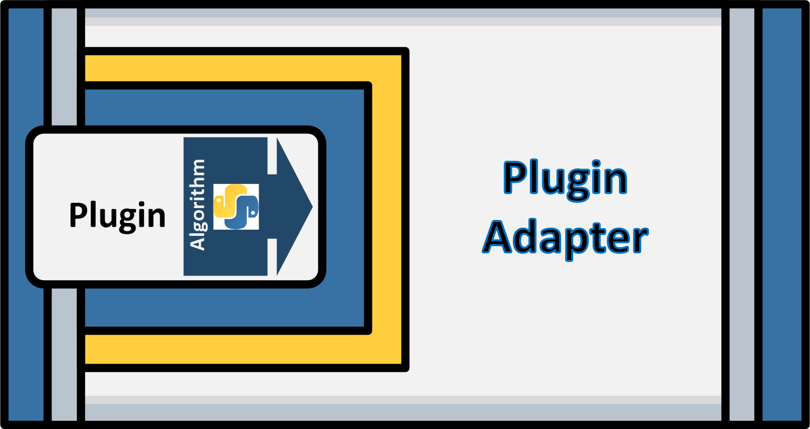
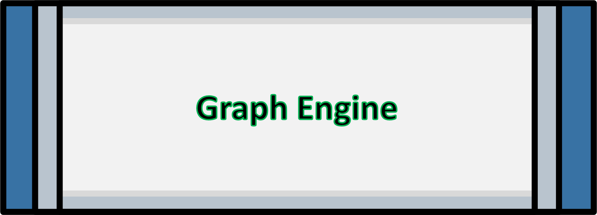
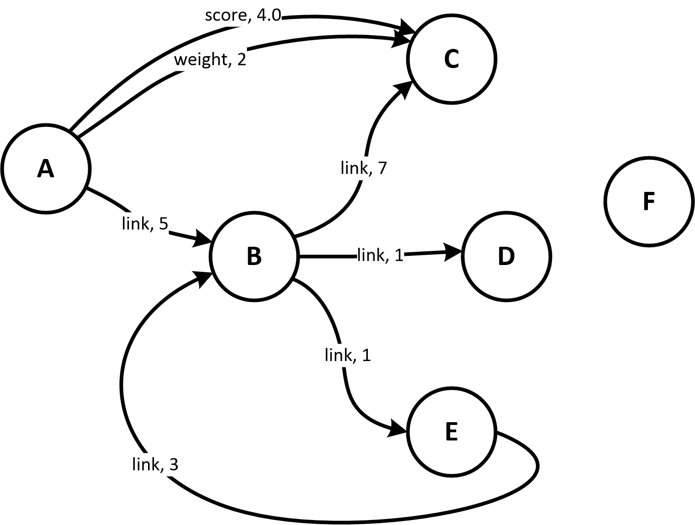
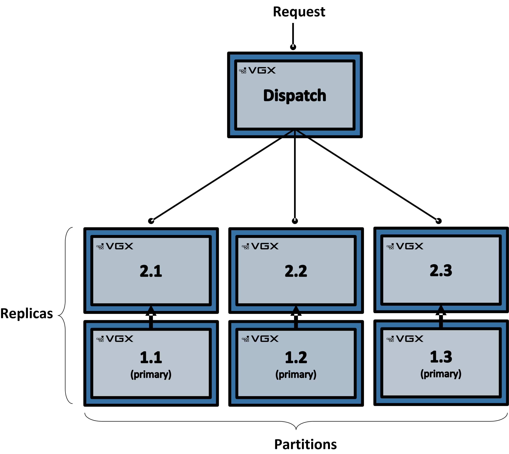
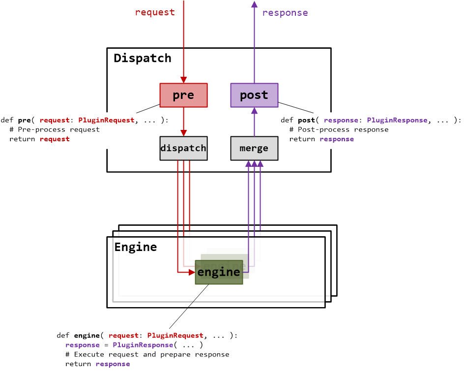

1. Introduction
VGX is a versatile, plugin-based platform designed for building scalable graph processing services using the PyVGX Python module. Implemented primarily in C with Python for service bootstrapping and plugin execution, it exposes HTTP endpoints for graph data management and querying.

1.1. Components
At its core, the architecture is divided into four interconnected components: 1) Socket Server, 2) Plugin Adapter, 3) Graph Engine, and 4) Transaction Interconnect. These elements form a modular foundation that handles incoming requests, custom logic execution, data storage and retrieval, and inter-instance communication, enabling efficient graph operations in both single-node and distributed environments.
1.1.1. Socket Server
The Socket Server serves as the primary entry point, functioning as an asynchronous, multithreaded HTTP/1.1 listener that parses incoming requests and dispatches them for execution. It operates in flexible modes—such as Engine mode for direct processing, Dispatch mode for forwarding to backend instances in configurable matrices (e.g., M replicas by N partitions), or Reverse Proxy mode for simple relaying—supporting scalability through load-balanced query distribution and aggregation of responses across nodes.
1.1.2. Plugin Adapter
Bridging the C-based core with Python extensibility, the Plugin Adapter enables the registration and invocation of custom Python functions as plugins tied to unique HTTP URIs. It handles parameter parsing, type conversion, and execution in dedicated threads, allowing real-time request processing, pre- and post-dispatch modifications, and integration with built-in services for tasks like graph queries or system monitoring.
1.1.3. Graph Engine
The Graph Engine manages the underlying graph data structures, providing robust storage, querying (e.g., neighborhood searches, arc evaluations), and modification operations (e.g., vertex creation or deletion). Its low level impementation ensures efficient processing and memory usage.
1.1.4. Transaction Interconnect
Facilitating seamless data exchange between VGX instances, the Transaction Interconnect handles replication and synchronization using provider-subscriber patterns over dedicated channels. It ensures data durability by directing modifications to primary replicas and supports monitoring of peer connections, enabling reliable propagation of graph updates in multi-node topologies.
1.2. Workflow
Together, these components orchestrate a cohesive workflow: an HTTP request arrives at the Socket Server, which invokes the Plugin Adapter to execute custom Python logic; this logic interacts with the Graph Engine for graph operations, while the Transaction Interconnect ensures any necessary data replication to other instances. This tight integration allows a single VGX Server instance to function as a self-sufficient graph service, processing queries and updates with low latency.
1.3. Scalability
For scalability, multiple VGX Server instances can be deployed in coordinated topologies, such as rectangular dispatch matrices, hierarchical cascades, or ring configurations, where data is distributed across partitions (sharded by graph elements) and replicated across designated primaries for fault tolerance. Front-end instances act as dispatchers, intelligently routing queries to one replica per partition based on priority and load, then merging partial responses into unified results—ideal for building search systems that aggregate insights from terabyte-scale graphs without single points of failure. This design supports horizontal scaling, incomplete response tolerance for high availability, and built-in monitoring to query metrics across the entire cluster.
2. Component Examples
To get a feel for each of the main components, here are brief examples using the pyvgx API.
If you have not yet installed pyvgx, you can do it like this:
pip install pyvgxEach of the examples below can be executed after importing and initializing the system. You have to run the examples in the order presented since each example depends on the previous.
First import and initialize the pyvgx module:
from pyvgx import *
system.Initialize( "examples" )2.1. Socket Server Example
 |
Start the HTTP server on port 9000 (main) and 9001 (admin). The admin port (main+1) is intended for UI access and other administrative task, while the main port is intended for plugin requests.
# Main server on port 9000, admin server on port 9001
system.StartHTTP( 9000 )Once the server is running you can open the system dashboard (http://127.0.0.1:9001/system) or call one of the builtin services (http://127.0.0.1:9000/vgx/builtin/createvertex?graph=system&id=A).
2.2. Plugin Adapter Example
 |
Register a new plugin function. The Python function’s parameters are automatically mapped to HTTP parameters.
def hello( request: PluginRequest, message: str ):
return f"Hi, you said '{message}'"
system.AddPlugin( hello )Once added, the plugin can be executed via HTTP:
http://127.0.0.1:9000/vgx/plugin/hello?message=good+morning!{"status": "OK", "response": "Hi, you said 'good morning!'", "level": 0, "partitions": null, "exec_ms": 0.056}2.3. Graph Engine Example
 |
Write a function to populate this graph:
 Figure 2. A Graph
|
graph = Graph("sample_graph")
def make_sample_graph( g ):
# Create vertices
for name in ("A", "B", "C", "D", "E", "F"):
g.CreateVertex( name )
# Make connections
g.Connect( "A", ("link", M_INT, 5), "B" )
g.Connect( "A", ("score", M_FLT, 4.0), "C" )
g.Connect( "A", ("weight", M_INT, 2), "C" )
g.Connect( "B", ("link", M_INT, 7), "C" )
g.Connect( "B", ("link", M_INT, 1), "D" )
g.Connect( "B", ("link", M_INT, 1), "E" )
g.Connect( "E", ("link", M_INT, 3), "B" )
make_sample_graph( graph )Now you can run a test query against this graph to see the result.
from pprint import pprint
def find_links( g, anchor ):
return g.Neighborhood(
id = anchor,
arc = ("link", D_OUT),
sortby = S_VAL,
fields = F_AARC
)
pprint( find_links( graph, "B" ) )The result will look like this:
['( B )-[ link <M_INT> 7 ]->( C )',
'( B )-[ link <M_INT> 1 ]->( E )',
'( B )-[ link <M_INT> 1 ]->( D )']2.4. Transaction Interconnect Example
At least two VGX instances are required to demonstrate transaction interconnect. Let’s start a second instance first, then connect the first instance to the second instance.
############################
## 2nd INSTANCE (subscriber)
############################
from pyvgx import *
system.Initialize("subscriber_instance")
# Second instance HTTP interface on main port 9010, admin port 9011
system.StartHTTP(9010)
# Prepare to become a subscriber
op.Bind(10010)##########################
## 1st INSTANCE (provider)
##########################
# First instance now becomes the provider
# and second instance becomes the subscriber
op.Attach( "vgx://127.0.0.1:10010" )
# Mirror existing graph over to subscriber
graph.Sync()
# Further local operations are automatically mirrored to subscriber
graph.CreateVertex( "another_node" )
graph.Connect( "A", ("link", M_INT, 42), "another_node" )
# Print local graph summary for reference
print(graph)
# -> <PyVGX_Graph: name=sample_graph order=7 size=8>############################
## 2nd INSTANCE (subscriber)
############################
# Print subscriber graph summary and compare with provider
graph = Graph("sample_graph")
print(graph)
# -> <PyVGX_Graph: name=sample_graph order=7 size=8>3. Scalable Systems
VGX Server’s dispatcher enables scalable graph systems by sharding data across partitions and replicating it for fault tolerance. In VGX Dispatch mode, it routes HTTP requests to a back-end matrix of M replicas (rows) by N partitions (columns). Queries span all partitions, while modifications target primary replicas.
 Figure 3. Basic Matrix
|
 Figure 4. Request Flow
|
3.1. Request Flow
-
A pre-processor plugin (optional) enhances requests before backend processing. For example, it can take a user query, perform model inference against a loaded AI model to generate a vector, and embed this vector in the request for backend search.
-
The dispatcher forwards the request to one replica per partition, selected based on priority and load.
-
Backend engines or dispatchers process in parallel, returning partial responses.
-
The dispatcher merges results, applies an optional post-processor plugin (e.g., to format or filter), and returns a unified response.
3.2. Key Features
-
Scales large data sets via flexible topologies (e.g., hierarchies, rings).
-
Plugins (
pre,engine,post) handle request logic, withPluginRequestandPluginResponsemanaging parameters, routing, and aggregation. -
Configured via
pyvgx.system.StartHTTP()with a matrix definition or a JSON system descriptor for multi-node setups usingpyvgx.VGXInstance.
3.3. Multi-Node System Descriptor
A system descriptor (e.g., vgx.cf) defines an interconnected multi-node VGX deployment, specifying instance roles, graphs, and connectivity via two topologies:
-
Transaction Topology: Governs data ingestion, streaming data (e.g., graph vertices, arcs) through provider-subscriber relationships to partitioned, replicated instances (e.g., builder to search instances). This ensures durable data replication across the matrix.
-
Dispatch Topology: Manages client requests, routing them through a dispatcher’s back-end matrix for querying or modifying data. Requests are distributed to partitions and aggregated for responses.
The multi-node framework is independent of the Graph Engine, enabling a scalable, fault-tolerant system for data ingestion and querying. While the Graph Engine provides built-in graph storage and query capabilities for plugins, plugins can leverage any Python package (e.g., AI libraries, databases) for custom functionality, making VGX a versatile platform for distributed systems.
3.4. System Administration
VGX systems can be managed through built-in web UIs or the vgxadmin command-line tool, enabling single-instance or multi-node operations like monitoring, configuration, and data synchronization. Admin UI pages are accessed via the admin port (e.g., host:port+1).
3.4.1. Built-in UIs (via admin port)
-
Admin: Toggle states (e.g., Service In/Out, Readonly/Mutable), perform actions like snapshot, sync, or truncate, and monitor metrics (e.g., uptime, request rate, memory).
-
Status: Readonly overview of server load, transaction I/O, graph counters, and memory usage.
-
Console: Execute commands (e.g., Graph.Vertices) or Python expressions for troubleshooting.
-
Search: Query graphs via neighborhoods, vertices, arcs, or expressions.
-
Plugins: Test user-defined or builtin plugins.
-
Multi-Node Dashboard: Aggregated overview of all instances (requires SYSTEM_Descriptor property), showing status, load, memory, and graph data, with clickable actions for administration.
3.4.2. Command-Line Tool (vgxadmin)
-
Perform multi-node administration, using a system descriptor file (e.g., vgx.cf) to target instances by ID or wildcard.
-
Common options include:
--statusfor summaries,--attach/detachfor transaction connections,--syncfor data replication,--servicein/outfor plugin availability. -
Supports advanced tasks like rolling updates, reverse syncs, and plugin reloading.
4. PyVGX API
The PyVGX API, part of the VGX platform, is designed to empower developers to build high-performance, scalable graph and vector search applications with a focus on simplicity, flexibility, and efficiency. Its philosophy emphasizes in-memory processing for low-latency operations, index-free adjacency for intuitive graph navigation, and a plugin-based architecture to enable customizable, distributed systems. Implemented in C with Python bindings, PyVGX bridges native performance with Python’s ease of use, minimizing Python interpreter overhead by delegating heavy computation to the VGX core, which bypasses Python’s global interpreter lock for parallel execution.
Key aspects of the API for building and querying graphs include:
-
Graph Construction: Graphs are composed of vertices and arcs, with vertices supporting arbitrary key-value properties and similarity vectors for implicit connections. The API provides methods like
Graph.Connect()andVertex.SetProperty()to create and modify graph structures in real-time, with support for expiration timestamps (TTL) for automatic data lifecycle management. -
Querying: The API offers powerful querying capabilities through global searches (
Graph.Vertices(),Graph.Arcs()) and local neighborhood traversals (Graph.Neighborhood()), with flexible filtering, sorting, and ranking via a common expression language. Vector-based similarity queries (e.g., Euclidean distance, Cosine similarity) enable advanced applications like a ANN/semantic search and recommendation systems. -
Concurrency and Scalability: Thread-safe access to graphs supports concurrent operations, with configurable timeouts and locking mechanisms. Multi-node deployments enable sharding and replication for large-scale data sets.
-
Plugin Integration: The
system.AddPlugin()method allows developers to define custom HTTP endpoints for data ingestion and querying, leveraging the VGX Server’s asynchronous socket server. Plugins can use any Python library, extending functionality beyond the built-in Graph Engine.
Compared to other graph engines like Neo4j or ArangoDB, PyVGX prioritizes in-memory performance and a lightweight, C-based core over disk-based persistence, making it ideal for soft real-time applications. Unlike TinkerPop/Gremlin, which focuses on a standardized query language, PyVGX’s expression-based querying and vector support cater to specialized use cases like vector search or reinforcement learning. Its open-ended design encourages developers to tailor solutions for diverse applications, from graph databases to AI-driven analytics, within a unified, scalable framework.
5. VGX Expression Language
The VGX Expression Language is a powerful, domain-specific language embedded within the VGX platform, designed to enhance graph traversal and querying with flexible, high-performance expressions for filtering, ranking, and result selection. Its philosophy prioritizes efficiency and expressiveness, enabling developers to define complex logic directly within graph queries like Graph.Neighborhood().
The language supports a rich set of operators, mathematical and string functions, vector similarity computations, and memory array operations, allowing sophisticated algorithms for tasks like scoring, aggregation, or breadth-first searches. Integrated tightly with neighborhood queries, it enables dynamic, context-aware processing of vertices, arcs, and their properties, making it a cornerstone of VGX’s ability to handle diverse graph-based applications efficiently.
graph.Neighborhood(
"B",
filter= """
next.arc.type == 'link' && next.arc.value > 1
""",
arc=("*", D_OUT),
hits=10,
sortby=S_VAL
)Expressions are safely evaluated in a sandboxed environment within the VGX C core, preventing arbitrary code execution, side effects like file I/O or network access, and ensuring thread-safety with controlled memory access to avoid crashes or data corruption.
This language exists to bridge the gap between high-level query customization and low-level performance optimization in a graph engine. It allows users to extend VGX’s querying capabilities inside the graph core, without the need for additional (slower) Python code.
Unlike Python, it is compiled and executed natively in the VGX C-based core, bypassing the Python GIL for parallel performance, yet it retains Python-like syntax for accessibility; compared to C, it abstracts low-level memory management while offering memory array manipulation for advanced use cases, such as histograms or cycle detection; and it shares similarities with assembly through low-level operations like inc, dec, mov, and bitwise functions that mimic register and memory instructions for fine-grained control.